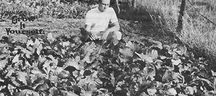

Looking for an exotic, flavorful, high-yield vegetable for your late garden? John Krill has just what you want!
Pe-tsai (literally, "white vegetable") is nothing new to the Chinese gardeners who've been growing the delicious crop for close to 2,000 years. To American gardeners, however, "Chinese cabbage" remains largely unknown.
Which is a shame . . . because this heavy-yielding member of the mustard family not only [A] grows rapidly in cool fall weather and [B] shows remarkable pest resistance, but [C] produces a head of distinctive, mild flavor . . . with none of the stomach-upsetting qualities of the more familiar European cabbage.
You'll recognize Chinese cabbage by its tall, columnar head, which measures up to 20 inches long and 5 or more inches in diameter. The tightly wrapped, albino leaves of the head make a fine slaw and are excellent cooked or used as a "surprise ingredient" in a tossed salad. In addition, the long, thick-ribbed outer leaves of the head-which resemble stalks of celery (hence the plant's alternate name, "celery cabbage")-make tasty cottage cheese boats and savory additions to soups and stews.
Chinese cabbage isn't at all hard to grow, provided you satisfy the plant's few simple needs . . . the primary requirement being cool weather for the greater part of the vegetable's 70- to 80-day maturation period. (It'll bolt and go to seed at the slightest hint of summer-like weather.) Here in northeastern Ohio, we plant our seeds in the first week of August . . . but then again, in warmer regions-such as California-it might be wise to hold off until September or October.
Seed houses offer two varieties of Chinese cabbage: Chihli and Michihli. I plant only the Michihli variety, because-in my experience-it heads more dependably and more uniformly than the other type.
Pe-tsai seems to care little whether the earth it grows in is clayey, silty, or sandy . . . so long as it's rich in humus and/or manure. (As a general rule, if the soil will support onions and tomatoes well, it'll do the same for Chinese cabbage.) Before you sow your seeds, then, spread manure or humus on the ground and till it in to a depth of at least six inches. This procedure will not only ensure that your plants have a rich supply of nutrients, but will help the topsoil retain moisture (something your cabbages need in great abundance if they're to enjoy rapid, uninterrupted growth).
Once you've prepared the ground in this fashion, use the corner of a hoe to make several inch-deep furrows spaced 20 inches apart . . . then water the furrows, sow the seed sparsely in the wet trenches, and cover them with a half inch of soil. In addition to showing where the seeds have been planted, your furrows act to [A] keep water around the seedlings' roots, and [B] concentrate the sun's warmth a small amount. Both actions will help get the young plants off to a faster start.
Let the seedlings come up four to five inches before you thin them to stand a foot apart. If you intend to replant the thinnings, don't just. pull them from dry soil (a procedure which tends to damage tender root tissues). Instead, soak the ground well first, then scoop each young plant out of the ground in such a way as to keep a good-sized ball of moist soil around its roots. Should you choose not to save the uprooted plants, you can-if you want-use their tender foliage in salads or in cooking.
Once started, your cabbages mustn't be allowed to endure extended dry periods . Drought conditions give rise to short, loose heads with leaves that have a decidedly strong taste and somewhat leathery texture. That doesn't mean, however, that you should water the plants constantly . . . just give them a good mulch (old manure is particularly satisfactory) and see to it that the soil never becomes parched.
Happily, few insects seem to relish the taste of a vigorously growing Chinese cabbage. Bugs do chew holes in the plant's outer leaves now and then, but these leaves are destined to be torn off and discarded anyway. All I can say is, I've never lost a crop of Chinese cabbage to insects (and I don't use insecticides, ever).
As your crop matures, pick the most mature heads first. It's easy to identify fully ripened heads: simply reach down and squeeze the plant in the center. If your fingers meet with firm resistance consider the head "mature".
Don't panic if an unexpected frost should strike, for Chinese cabbage can withstand a considerable amount of cold. Even a plant that appears to be completely frozen will be OK to use in salads and in cooking if you [1] strip away all outer leaves, [2] place the bright, clean head in a plastic bag, [3] put the bag in the refrigerator, and [4] let the frozen foilage thaw overnight. The next day, your cabbage will look-and taste-as though nothing had happened to it.
Chinese cabbage can be stored in several ways. The easiest way is just to pack the heads in the fridge's crisper . . . however, if you wish to store cabbages for more than a couple of weeks (or if you have a whole garden full of heads that need to come indoors), you'd best stash the crop in the cold cellar. Uproot each plant, discard the outer leaves, arrange the cabbages in rows with dry straw laid in between them . . . and your crop will keep for two months or more.
You can also keep Chinese cabbages growing indoors until you want them by placing the plants in tubs or deep containers so that the roots'll stand in water. (Don't shake off any soil that adheres to the roots.)
If you're looking for a rewarding (in more ways than one) fall crop, consider pe-tsai. It's "the cabbage with a difference".
|
 |
|
|